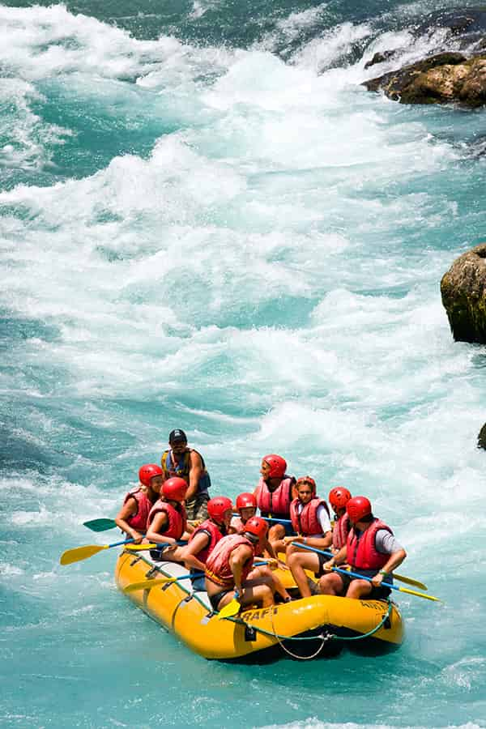

About Us -- SPLASH: White Water Rafting

“Working at Splash has been an incredible experience. Every day I get to meet new
people, share my
passion for rafting, and help our guests discover the excitement of the river.
What I enjoy most is
seeing the smiles on their faces when they finish a trip. For me, Splash is more
than a job; it is a
community built around adventure, teamwork, and respect for nature.”
History
Splash: White Water Rafting was founded in 2012 by a group of friends who loved
rivers, nature, and
outdoor adventures. We wanted to create a place where people could experience the
excitement of
white-water rafting while enjoying the beauty of the surrounding landscape. And,
after some time, we became a popular destination for adventure seekers.

Today, Splash: White Water Rafting offers adventures for beginners, families, and
experienced
rafters. Our professional guides focus on safety, teamwork, and creating
unforgettable experiences.
We continue to grow while staying true to the values that inspired our founders:
adventure,
friendship, and respect for nature.